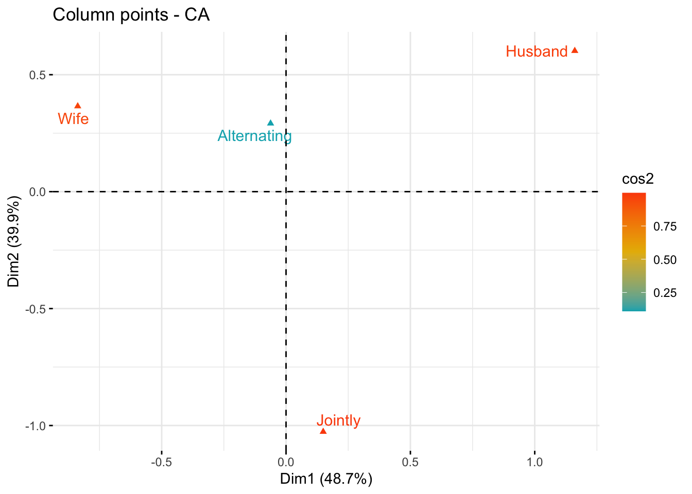

Code
# Libraries
library(tidyverse)
library(gplots)
library(corrplot)
library(FactoMineR)
library(factoextra)
library(kableExtra)In this post, we will briefly discuss an example of how Simple Correspondence Analysis (SCA) can be performed using the R programming language. Several functions from different packages are available in the R software for computing SCA. No matter what package we decide to use for the analysis (in this post, we will use the package FactoMineR), the package factoextra is great for producing ggplot2-based elegant visualizations of analysis results. A couple of other packages, namely gplots and corrplot, will also be used.
# Libraries
library(tidyverse)
library(gplots)
library(corrplot)
library(FactoMineR)
library(factoextra)
library(kableExtra)housetasks, available in the package factoextra, is a data frame that contains the frequency of execution of 13 house tasks performed by the couple in four different ways: a) the wife only; b) alternatively; c) the husband only; d) jointly.
data(housetasks)
housetasks %>%
kable(
align = "rrrr",
col.names = c("Wife", "Alternating", "Husband", "Jointly"),
caption = "House tasks contingency table",
) %>%
kable_classic()| Wife | Alternating | Husband | Jointly | |
|---|---|---|---|---|
| Laundry | 156 | 14 | 2 | 4 |
| Main_meal | 124 | 20 | 5 | 4 |
| Dinner | 77 | 11 | 7 | 13 |
| Breakfeast | 82 | 36 | 15 | 7 |
| Tidying | 53 | 11 | 1 | 57 |
| Dishes | 32 | 24 | 4 | 53 |
| Shopping | 33 | 23 | 9 | 55 |
| Official | 12 | 46 | 23 | 15 |
| Driving | 10 | 51 | 75 | 3 |
| Finances | 13 | 13 | 21 | 66 |
| Insurance | 8 | 1 | 53 | 77 |
| Repairs | 0 | 3 | 160 | 2 |
| Holidays | 0 | 1 | 6 | 153 |
# Convert the data frame to a table
dt <- as.table(as.matrix(housetasks))
# Graph
balloonplot(t(dt), main ="House tasks contingency table", xlab = "", ylab = "",
label = FALSE, show.margins = FALSE)
The function CA() from the package FactoMineR is used. It performs the Singular Value Decomposition of the standardized residuals, see my previous post here. The first step of the analysis was done there in order to evaluate whether there was a significant dependency between the rows and columns using the chi-square statistic.
res.ca <- CA(housetasks, graph = FALSE)
print(res.ca)**Results of the Correspondence Analysis (CA)**
The row variable has 13 categories; the column variable has 4 categories
The chi square of independence between the two variables is equal to 1944.456 (p-value = 0 ).
*The results are available in the following objects:
name description
1 "$eig" "eigenvalues"
2 "$col" "results for the columns"
3 "$col$coord" "coord. for the columns"
4 "$col$cos2" "cos2 for the columns"
5 "$col$contrib" "contributions of the columns"
6 "$row" "results for the rows"
7 "$row$coord" "coord. for the rows"
8 "$row$cos2" "cos2 for the rows"
9 "$row$contrib" "contributions of the rows"
10 "$call" "summary called parameters"
11 "$call$marge.col" "weights of the columns"
12 "$call$marge.row" "weights of the rows" The following functions available the factoextra package can be used to help in the SCA interpretation and visualization:
| Function name | Purpose |
|---|---|
| get_eigenvalue() | Extract the eigenvalues/variances retained by each dimension (axis) |
| fviz_eig() | Visualize the eigenvalues |
| fviz_screeplot() | Scree plot |
| get_ca_row() | Extract the results for rows |
| get_ca_col() | Extract the results for columns |
| fviz_ca_row() | Visualize the results for rows |
| fviz_ca_col() | Visualize the results for columns |
| fviz_ca_cos2() | Cos2 of rows on selected axes |
| fviz_ca_biplot() | Make a biplot of rows and columns |
Eigenvalues correspond to the amount of information retained by each axis. Dimensions are ordered from largest to smallest and reported with the amount of variance each of them explains in the solution. Dimension 1 (Dim.1) explains the most variance in the solution, followed by dimension 2 (Dim.2) and so on. The cumulative percentage explained is obtained by adding the successive proportions of variance explained. For instance, 48.69% plus 39.91% equals 88.6%, and so forth. Therefore, about 88.6% of the variance is explained by the first two dimensions.
Eigenvalues can be used to determine the number of axes to retain. There is no “rule of thumb” to choose the number of dimensions to keep for the data interpretation. It depends on the research question and the need of the researcher. For example, if 80% of the total variation explained is believed satisfactory for the purpose of the analysis, then the number of dimensions necessary to achieve that goal will be considered. Generally, a good dimension reduction is achieved with the first few dimensions accounting for a large proportion of the variation. In the example in this post, the first two axes explain 88.6% of the variation.
An alternative method to determine the number of dimensions is to look at a Scree Plot, which is the plot of eigenvalues/variances ordered from largest to smallest. The number of components is determined at the point, beyond which the remaining eigenvalues are all relatively small and of comparable size.
In the example in this post, the house tasks contingency table contains 13 rows and 4 columns. If the data were random, the expected value of the eigenvalue for each axis would be 1/(nrow(housetasks)-1) (rows), and 1/(ncol(housetasks)-1) (columns). Any axis contributing more than the maximum of these two percentages, namely \(33.33\%\) in the example here, should be considered as important and included in the final solution.
eig.val <- get_eigenvalue(res.ca)
round(eig.val, 2) eigenvalue variance.percent cumulative.variance.percent
Dim.1 0.54 48.69 48.69
Dim.2 0.45 39.91 88.60
Dim.3 0.13 11.40 100.00v <- max(c(1/(nrow(housetasks)-1), 1/(ncol(housetasks)-1)))*100
fviz_screeplot(res.ca, addlabels = TRUE, ylim = c(0, 50)) +
geom_hline(yintercept = v, linetype = 2, color = "red")According to the graph above, only Dim.1 and Dim.2 should be used in the solution. Dim.3 explains only 11.4% of the total variation, which is well below the stated threshold at 33.33%, hence it can be discarded. Dim.1 and Dim.2 explain approximately 48.7% and 39.9% of the total variation, respectively. This corresponds to a cumulative total of 88.6% of total variation retained by them.
# repel = TRUE to avoid text overlapping
fviz_ca_biplot(res.ca, repel = TRUE)The graph above is called symmetric plot, or biplot. The biplot is helpful to show global patterns existing within the data. Rows are represented by blue points and columns by red triangles. The distance between any pair of row points, or any pair of column points, gives a measure of their similarity (or dissimilarity). Row (column) points with similar profile are close in the biplot.
The biplot represents the row and column profiles simultaneously in a common space. It is worth stress that:
In order to interpret the distance between column and row points, the column (row) profiles must be presented in row (column) space. The resulting type of map is called asymmetric biplot; it is not discussed in this post.
The function get_ca_row() is used to extract the results for row points. This function returns a list containing the coordinates, the squared cosine (cos2), the contribution and the inertia of row points:
row <- get_ca_row(res.ca)
rowCorrespondence Analysis - Results for rows
===================================================
Name Description
1 "$coord" "Coordinates for the rows"
2 "$cos2" "Cos2 for the rows"
3 "$contrib" "contributions of the rows"
4 "$inertia" "Inertia of the rows" The components of the get_ca_row() function can be used in the plot of rows as follows:
row$coord: coordinates of each row point in each dimension (1, 2 and 3).row$cos2: quality of representation of rows.var$contrib: contribution of rows (in %) to the definition of the dimensions.Coordinates of row points
fviz_ca_row(res.ca, col.row = "blue", shape.row = 16, repel = TRUE)The plot above shows the relationships between row points:
Quality of representation of rows
I recall that the quality of representation of the rows on the biplot is called the squared cosine (cos2) or the squared correlation. The cos2 measures the degree of association between rows and a particular axis. The values of the cos2 range in the interval between 0 and 1. The sum of the cos2 for rows on all the CA dimensions is equal to one. The quality of representation of a row in \(n\) dimensions is simply the sum of the squared cosine of that row over the \(n\) dimensions. If a row item is well represented by two dimensions, the sum of the cos2 should be close to one. For some of the row items, more than 2 dimensions may be required to perfectly represent the data.
It is possible to color row points by their cos2 values using the argument col.row = "cos2" in fviz_ca_row(). This produces a color gradient, which can be customized using the argument gradient.cols. For instance, gradient.cols = c("white", "blue", "red") means that:
The row variables with the larger value of cos2, contribute the most to the definition of the dimensions. Rows that contribute the most to the retained dimensions, i.e., Dim.1 and Dim.2, are the most important in the process of variance explanation. Rows that do not contribute much to the retained dimensions or that contribute to the last dimensions, i.e., Dim.3, are less important.
# Color by cos2 values
fviz_ca_row(res.ca, col.row = "cos2",
gradient.cols = c("#00AFBB", "#E7B800", "#FC4E07"),
repel = TRUE)# Cos2 of rows on Dim.1 and Dim.2
fviz_cos2(res.ca, choice = "row", axes = 1:2)The function fviz_contrib() can be used to draw a bar plot of row contributions. The red dashed line on the graph below indicates the expected average value, if the contributions were uniform.
# Contributions of rows to dimension 1
fviz_contrib(res.ca, choice = "row", axes = 1, top = 10)# Contributions of rows to dimension 2
fviz_contrib(res.ca, choice = "row", axes = 2, top = 10)# Total contribution to dimension 1 and 2
fviz_contrib(res.ca, choice = "row", axes = 1:2, top = 10)It can be seen that:
fviz_ca_row(res.ca, col.row = "contrib",
gradient.cols = c("#00AFBB", "#E7B800", "#FC4E07"),
repel = TRUE)The scatter plot gives an idea of what pole of the retained dimensions the row categories are contributing to. The row categories “Repair” and “Driving” have an important contribution to the positive pole of the first dimension, while the categories “Laundry” and “Main_meal” have an important contribution to the negative pole of the first dimension, and so forth. In other words, Dim.1 is mainly defined by the opposition of “Repair” and “Driving” (positive pole), and “Laundry” and “Main_meal” (negative pole).
The function get_ca_col() is used to extract the results for column variables. This function returns a list containing the coordinates, the squared cosine (cos2), the contribution and the inertia of column variables:
col <- get_ca_col(res.ca)
colCorrespondence Analysis - Results for columns
===================================================
Name Description
1 "$coord" "Coordinates for the columns"
2 "$cos2" "Cos2 for the columns"
3 "$contrib" "contributions of the columns"
4 "$inertia" "Inertia of the columns" The components of the get_ca_col() function can be used in the plot of columns as follows:
col$coord: coordinates of each column point in each dimension (1, 2 and 3).col$cos2: quality of representation of columnsvar$contrib: contribution of columns (in %) to the definition of the dimensions.Coordinates of column points
fviz_ca_col(res.ca, col.col = "red", shape.col = 17, repel = TRUE)The plot above shows the relationships between column points:
Quality of representation of columns
I recall that the quality of representation of the columns on the biplot is called the squared cosine (cos2) or the squared correlation. The cos2 measures the degree of association between columns and a particular axis. The values of the cos2 range in the interval between 0 and 1. The sum of the cos2 for columns on all the CA dimensions is equal to one. The quality of representation of a column in \(n\) dimensions is simply the sum of the squared cosine of that column over the \(n\) dimensions. If a column item is well represented by two dimensions, the sum of the cos2 should be close to one. For some of the column items, more than 2 dimensions may be required to perfectly represent the data.
It is possible to color column points by their cos2 values using the argument col.col = "cos2" in fviz_ca_col(). This produces a color gradient, which can be customized using the argument gradient.cols. For instance, gradient.cols = c("white", "blue", "red") means that:
The column variables with the larger value of cos2, contribute the most to the definition of the dimensions. Columns that contribute the most to the retained dimensions, i.e., Dim.1 and Dim.2, are the most important in the process of variance explanation. Columns that do not contribute much to the retained dimensions or that contribute to the last dimensions, i.e., Dim.3, are less important.
# Color by cos2 values
fviz_ca_col(res.ca, col.col = "cos2",
gradient.cols = c("#00AFBB", "#E7B800", "#FC4E07"),
repel = TRUE)
# Cos2 of rows on Dim.1 and Dim.2
fviz_cos2(res.ca, choice = "col", axes = 1:2)The function fviz_contrib() can be used to draw a bar plot of column contributions. The red dashed line on the graph below indicates the expected average value, if the contributions were uniform.
# Contributions of columns to dimension 1
fviz_contrib(res.ca, choice = "col", axes = 1, top = 10)# Contributions of colums to dimension 2
fviz_contrib(res.ca, choice = "col", axes = 2, top = 10)# Total contribution to dimension 1 and 2
fviz_contrib(res.ca, choice = "col", axes = 1:2, top = 10)It can be seen that only the column item “Alternating” is not very well displayed on the first two dimensions. The position of this item must be interpreted with caution in the space formed by Dim.1 and Dim.2.
fviz_ca_col(res.ca, col.col = "contrib",
gradient.cols = c("#00AFBB", "#E7B800", "#FC4E07"),
repel = TRUE)As mentioned above, the standard plot of SCAs is a symmetric biplot, in which both rows (blue points) and columns (red triangles) are represented in the same space using the principal coordinates. These coordinates represent the row and column profiles. In this case, only the distance between row points or the distance between column points can be interpreted.
fviz_ca_biplot(res.ca, repel = TRUE)
The series of two posts I have compiled so far concerning SCA just scratched the surface of their fascinating, and challenging, world. A lot more should be said to achieve a serious and meaningful interpretation of the results they can offer to the analyst. Maybe, in the future, I will continue the series with additional contributions. Up to now, that’s it.